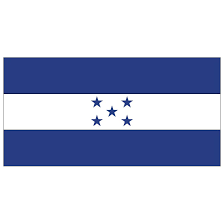

About me
My Name Is Marco Salcedo. I Like to learn New things and lately I have enjoyed learnig new programing skills and languages.
I am a Returned missionary, I served My mission in 2011-2013 in Dominican Repoblic. I loved my mission and The peaple I was with.
After my mission
I Married Wendy and now We Have 3 sons.
HONDURAS

This is a contry located in Central America with a delicious variarity of food. Honduras is also known by its National Music (Punta) and its beatiful islands.